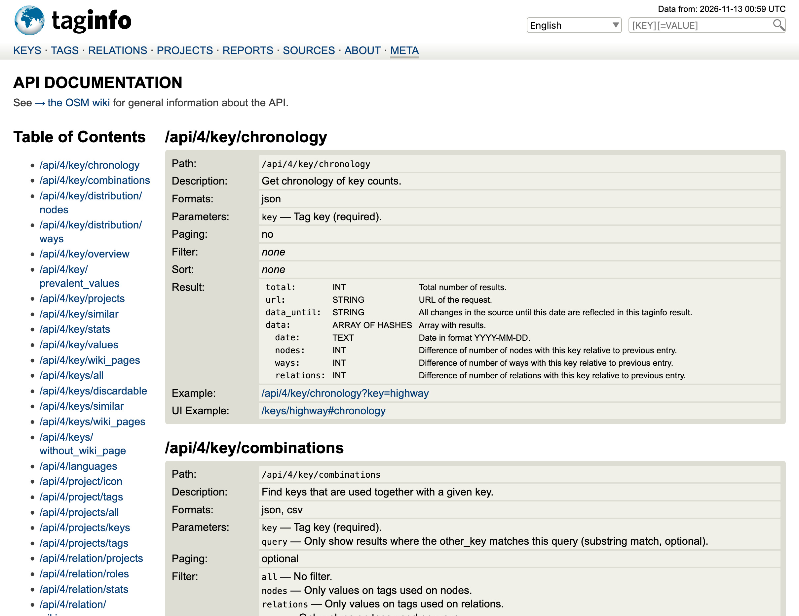

In this session, we will be be using 3rd party APIs to retrieve data and expand our dataset. We will be using two services that have public APIs and will be using them via web browser and code.
Taginfo is a system for finding and aggregating information about OSM tags and making it browsable and searchable. It was created by Jochen Topf.
You can try it out at: taginfo.openstreetmap.org. This is the main taginfo site and covers the whole
Why is this useful?
OpenStreetMap uses a system of 1 (combinations of keys and values) to describe geographic objects. Anyone can create new tags and add them to existing or new objects, making the map very flexible but also potentially confusing.
Figure 1: A screenshot from taginfo, displaying information about a given key (building)
CautionTask
Pick a key (or a tag) of your interest
Use the GUI to explore what it says about the them.
Can you answer any of the aforementioned questions about the tag?
API
Taginfo offers several endpoints. Each endpoint (and the parameters is accepting and the outputs) is documented here: https://taginfo.openstreetmap.org/taginfo/apidoc. As seen in Figure 2, there are multiple endpoints. Each of them is thoroughly described.

Figure 2: Screenshot of Taginfo’s API documentation
ImportantHow to read this?
Taginfo’s API documentation may seem daunting, but it provides key information that is important to understand:
path: is the url of the endpoint that we need to query
description: provides an explanation of what the endpoint does
format: explains the format in which the results are returned. In this case is a json file, which does not store information in rows and columns, and will need to be converted to a data frame.
paging: in this case is set to no, which means that all the results will be displayed in a single page/file.
sort: there’s no sorting
result: this lists every field contanined in the resulting json file, along with an explanation of their type and a description.
example: this provides a URL with a query. This is useful in two ways: 1) we can see the URL patterns, 2) we can see how a result would look like.
UI example: the equivalent query, as seen through the GUI (Website).
Quering Taginfo API with R
We will be using two packages: 1. {jsonlite}: to work with data stored in a json file. 2. {dplyr}: to manipulate a dataframe.
library(dplyr)library(jsonlite)selected_key <-"wheelchair"# Set up the API endpoints URLendpoint_chronology <-paste0("https://taginfo.openstreetmap.org/api/4/key/chronology?key=", selected_key)# Send a GET request to the API endpointresponse <-fromJSON(endpoint_chronology, simplifyDataFrame =TRUE)# Save the data in the response (json) into a dataframekey_chronology <-as.data.frame(response$data)# We want to store the name of the keykey_chronology <- key_chronology |>mutate(key = selected_key,date =as.Date(date) ) |>relocate(key, .before =1)head(key_chronology)
We can even create some (basic) visualisations with that data:
# Plot cumulative way usage with base R:plot(x = key_chronology$date,y =cumsum(key_chronology$ways),type ="l",lwd =2, col ="red", main =paste0("Cumulative '", selected_key, "' key usage on ways"),xlab ="Date", ylab ="Ways (cumulative)")
selected_key <-"wheelchair"# Set up the API endpoints URLendpoint_prevalent_values <-paste0("https://taginfo.openstreetmap.org/api/4/key/prevalent_values?key=", selected_key)# Retrieve key overviewresponse <-fromJSON(endpoint_prevalent_values, simplifyDataFrame =TRUE)key_prevalent_values <-as.data.frame(response$data)head(key_prevalent_values)
value count fraction
1 yes 2499421 0.6154
2 no 1026815 0.2528
3 limited 496905 0.1223
4 <NA> 38214 0.0094
Overpass
Overpass is a read only API that retrieves map features containing a certain key or tag. It offers a way to query the map to look for specific features.
In this case, due to its relatively complexity, we will be using a specialised package to use Overpass API: {osmdata}.
TipHow to get a bounding box coordinates
Overpass needs a bounding box (usually shortened to bbox) is a rectangular area defined by two longitudes and two latitudes, where: - Latitude is a decimal number between -90.0 and 90.0. - Longitude is a decimal number between -180.0 and 180.0.
They usually follow the standard format of:
bbox = left,bottom,right,top
bbox = min Longitude , min Latitude , max Longitude , max Latitude
# Uncomment below if you don't have osmdata installed in your system:# install.packages("osmdata")library(osmdata)
Data (c) OpenStreetMap contributors, ODbL 1.0. https://www.openstreetmap.org/copyright
connected to: https://overpass-api.de/api/interpreter
# Getting our bounding boxwarwick_bbox <-getbb("University of Warwick")#warwick_bbox <- c(-1.57418,52.37887,-1.55783,52.38314) #Obtained from https://norbertrenner.de/osm/bbox.htmlwarwick_art <-opq(bbox = warwick_bbox) |>add_osm_feature(key ="tourism", value ="artwork") |>osmdata_sf()
Waiting 14.9998710155487 seconds
# Explore the datawarwick_art
Object of class 'osmdata' with:
$bbox : 52.3706939,-1.5773781,52.3913551,-1.5490306
$overpass_call : The call submitted to the overpass API
$meta : metadata including timestamp and version numbers
$osm_points : 'sf' Simple Features Collection with 19 points
$osm_lines : NULL
$osm_polygons : 'sf' Simple Features Collection with 0 polygons
$osm_multilines : NULL
$osm_multipolygons : NULL
sf stands for Simple Features, and is a data type used to store geospatial information. Geospatial features can be: - points - lines - polygons (i.e., closed shapes) - multilines (a group of lines, not necessarily adjacent) - multipolygons (a group of polygons, not necessarily adjacent)
osm_id name artist_name
2502341718 2502341718 3B Series No 1 Bernard Schottlander
4951142727 4951142727 Let's Not Be Stupid Richard Deacon
5065989300 5065989300 Needle of Knowledge Obelisk Stefan Knapp
5081993647 5081993647 <NA> <NA>
5428430940 5428430940 Days of Judgement - Cat 1 <NA>
5428430941 5428430941 Butterworth Bench <NA>
artwork:material artwork_type heritage
2502341718 welded mild steel painted bright red sculpture 2
4951142727 <NA> sculpture <NA>
5065989300 <NA> <NA> <NA>
5081993647 <NA> <NA> <NA>
5428430940 <NA> sculpture <NA>
5428430941 <NA> <NA> <NA>
heritage:operator listed_status source start_date tourism
2502341718 Historic England Grade II bing 1968 artwork
4951142727 <NA> <NA> <NA> <NA> artwork
5065989300 <NA> <NA> survery <NA> artwork
5081993647 <NA> <NA> survery <NA> artwork
5428430940 <NA> <NA> <NA> <NA> artwork
5428430941 <NA> <NA> <NA> <NA> artwork
geometry
2502341718 -1.56067, 52.37792
4951142727 -1.562199, 52.378942
5065989300 -1.56396, 52.38194
5081993647 -1.560694, 52.380967
5428430940 -1.562934, 52.379493
5428430941 -1.560258, 52.380195
As we can see, this object contains both, geometry, and attributes describing the feature
CautionCan you recognise any of those attributes?
Indeed! Each of the column names are different keys from OpenStreetMap!
# Uncomment below if you don't have osmdata installed in your system:# install.packages("leaflet")library(leaflet)# Save into a separate object to reduce typing.points <- warwick_art$osm_points# Create the interactive mapleaflet() |>addTiles() |>addMarkers(data = points)
We can do slightly better by adding some popups displaying the attributes:
# We create a new column aggregating multiple fields to be displayed in the popuppoints <- points |>mutate(popup =paste(sep ="<br>", name, artist_name, artwork_type ) )# Now, repeat the map, but adding labels and a popupleaflet() |>addTiles() |>addMarkers(data = points,label =~name,popup =~popup )
Wrap up
In this session we’ve learnt a number of different things!
We got a theoretical understanding on strategies to work with big data.
And how API’s are examples of outscaling our infrastructure
Through interacting with two different API services we learnt:
We gained an understanding on how to get started with API services (e.g. documentation) and what to expect from them
We learnt how to interact via GUI and through code
When interacting with API through code, we learnt:
To use generic functions to query the APIs directly
To use specialised libraries to work with specific APIs
And we have also refreshed concepts from previous week: